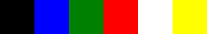
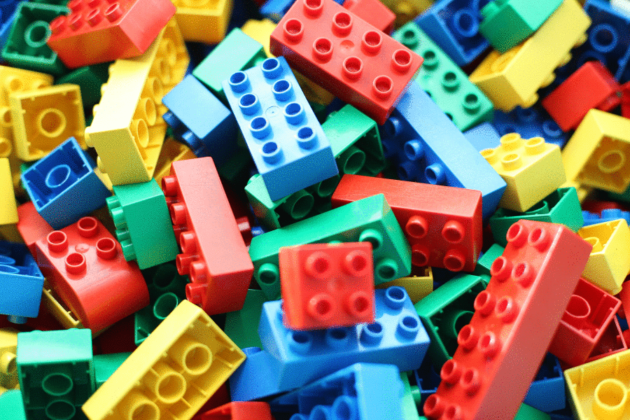
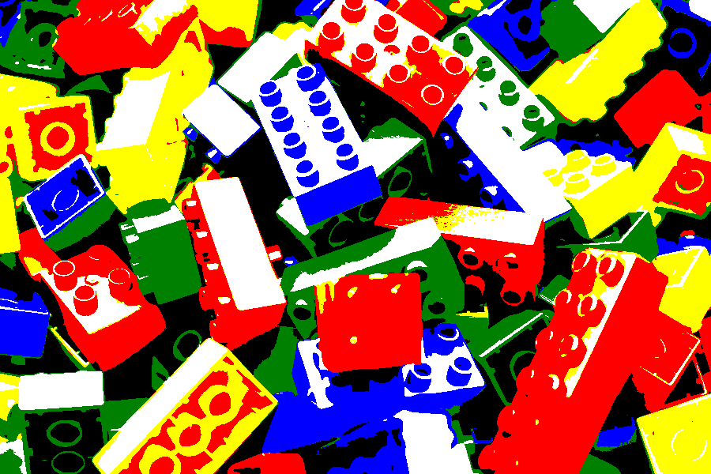
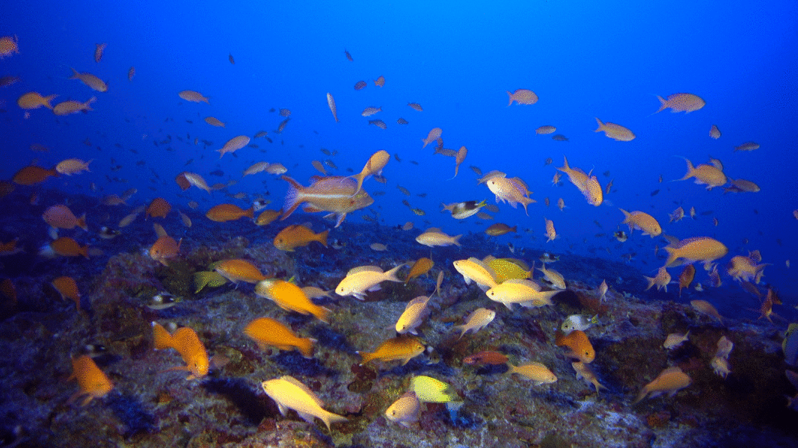

suppressPackageStartupMessages({
library(dplyr)
library(tibble)
library(magick)
})tl;dr
I used the {magick} package in R to map an image’s colours to their nearest match from a simplified palette, then quantified how much of the image was covered by each colour in that palette.
Note
I later learnt about {colorfindr} by David Zumbach, which can extract colours from images, provide composition details and generate palettes. Check it out.
Colour search
As a side project at work, we wanted users to be able to search images of artwork by their prevalence of colours from a small simple palette (red, blue, yellow, etc). Lots of online services let you sort images by colour, like Google Arts & Culture, Designspiration and TinEye Multicolr.
Art of the possible
What might be a relatively simple and straightforward way to do this in R? By ‘simple’ I mean we don’t want to do any hard work. We don’t want to consider any colour theory1 and we want to stick to simple, easily-named colours like ‘green’.2
So, we can do the following:
- Read in an image
- Prepare a set of ‘simple colours’
- Map the simple colours to the image
- Quantify the colours
It’s a kind of ImageMagick
The {magick} R package is an implementation of ImageMagick, an open-source software suite whose emphasis is image manipulation from the command line. The flexibility of {magick} can be seen in its vignette.
The package was created and is maintained by Jeroen Ooms, a software engineer and postdoc at rOpenSci, a collective that seeks to develop tools for open and reproducible research.
rOpenSci hosted a workshop from Ooms about working with images in R and the presentation slides caught my attention. I’ve used some of Jeroen’s code below.
Code
First we need to load our packages; all are available from CRAN.
Read a test image
I’ve chosen a colourful image to use for our test case: it’s a picture of a bunch of Lego Duplo bricks.3
We’ll use image_read() to read the JPEG as an object of class ‘magick’ and then image_scale() to reduce the image size and save some space.
Printing the image also gives us some details of format, dimensions, etc.
# Path to the image
duplo_path <- "https://upload.wikimedia.org/wikipedia/commons/thumb/a/ac/Lego_dublo_arto_alanenpaa_2.JPG/2560px-Lego_dublo_arto_alanenpaa_2.JPG"
# Read as magick object and resize
duplo <- image_read(duplo_path) %>%
image_scale(geometry = c("x600"))
print(duplo)# A tibble: 1 × 7
format width height colorspace matte filesize density
<chr> <int> <int> <chr> <lgl> <int> <chr>
1 JPEG 900 600 sRGB FALSE 0 72x72 Prepare simple colours
We’ll map a set of simple colours to the test image. This means that the colours from the test image will be replaced by the ‘closest’ colour from our simple set.
One way to do this is to define our simple colour set and create an image from them. In this case I’m taking just six colours.
# Generate named vector of 'simple' colours
cols_vec <- setNames(
c("#000000", "#0000ff", "#008000", "#ff0000", "#ffffff", "#ffff00"),
c("black", "blue", "green", "red", "white", "yellow")
)Then we can plot squares of these colours, using image_graph() to read them as magick-class objects.4 My method here is not the most efficient, but you can see the output is an image that contains our six colours.
Click for code
# For each vector element (colour) create a square of that colour
for (i in seq_along(cols_vec)) {
fig_name <- paste0(names(cols_vec)[i], "_square") # create object name
assign(
fig_name, # set name
image_graph(width = 100, height = 100, res = 300) # create magick object
)
par(mar = rep(0, 4)) # set plot margins
plot.new() # new graphics frame
rect(0, 0, 1, 1, col = cols_vec[i], border = cols_vec[i]) # build rectangle
assign(fig_name, magick::image_crop(get(fig_name), "50x50+10+10")) # crop
dev.off() # shut down plotting device
rm(i, fig_name) # clear up
}
# Generate names of the coloured square objects
col_square <- paste0(names(cols_vec), "_square")
# Combine magick objects (coloured squares)
simple_cols <- image_append(c(
get(col_square[1]), get(col_square[2]), get(col_square[3]),
get(col_square[4]), get(col_square[5]), get(col_square[6])
))print(simple_cols)# A tibble: 1 × 7
format width height colorspace matte filesize density
<chr> <int> <int> <chr> <lgl> <int> <chr>
1 PNG 300 50 sRGB TRUE 0 300x300
Map to the image
Now we can apply the simple colour set to the test image using image_map().
duplo_mapped <- image_map(image = duplo, map = simple_cols)And we can use image_animate() to see the difference between the two.
image_animate(c(duplo, duplo_mapped), fps = 1)
Great. You can see where the original colours have been replaced by the ‘closest’ simple colours.
Note in particular where the more reflective surfaces are mapped to white than the actual brick colour.
This is okay: the brick may be blue, but we’ve only defined one shade of blue. If a particular shade is closer to white, then so be it.
Quantify the colours
Now we can take this mapped image and quantify how much of the image belongs to each colour. Imagine we’ve broken the image into pixels and then we’re counting how many belng to each of our six colours.
# Function to count the colours (adapted from Jeroen Ooms)
count_colors <- function(image) {
data <- image_data(image) %>%
apply(2:3, paste, collapse = "") %>%
as.vector %>% table() %>% as.data.frame() %>%
setNames(c("hex", "freq"))
data$hex <- paste("#", data$hex, sep="")
return(data)
}
# Dataframe of dominant colours
duplo_col_freq <- duplo_mapped %>%
count_colors() %>%
left_join(
enframe(cols_vec) %>% rename(hex = value),
by = "hex"
) %>%
arrange(desc(freq)) %>%
mutate(percent = 100*round((freq/sum(freq)), 3)) %>%
select(
`Colour name` = name, Hexadecimal = hex,
`Frequency of colour` = freq, `Percent of image` = percent
)
duplo_mapped # see mapped image again
knitr::kable(duplo_col_freq) # quantify colour| Colour name | Hexadecimal | Frequency of colour | Percent of image |
|---|---|---|---|
| red | #ff0000 | 132135 | 24.5 |
| white | #ffffff | 107841 | 20.0 |
| black | #000000 | 103645 | 19.2 |
| yellow | #ffff00 | 79750 | 14.8 |
| green | #008000 | 64868 | 12.0 |
| blue | #0000ff | 51761 | 9.6 |
So red makes up almost a quarter of the image, with white and black just behind. This makes sense: many of the bricks are red and much of the shadow areas of yellow bricks were rendered as red, while black and white make up many of the other shadows and reflective surfaces.
And so we must p-art
So, you can map a simple colour set to an image with {magick} and then quantify how much of the image is covered by that simple set.
Of course, there are many possibilities beyond what’s been achieved here. For example, you could create a tool where the user chooses a colour and images are returned in order of dominance for that colour. You could also write this all into a function that takes a folder of images and returns the percentage of each colour in each image.
Below are some additional examples of the approach taken in this post.
Reef fish
Click for details
Image by Richard L Pyle from Wikimedia Commons, CC0 1.0.
{kind=link}
reef_path <- "https://upload.wikimedia.org/wikipedia/commons/0/05/100%25_reef-fish_Endemism_at_90_m_off_Kure_Atoll.jpg"
reef <- image_read(reef_path) %>%
image_scale(geometry = c("x600"))
reef_mapped <- image_map(image = reef, map = simple_cols)
reef_col_freq <- reef_mapped %>%
count_colors() %>%
left_join(
enframe(cols_vec) %>% rename(hex = value),
by = "hex"
) %>%
arrange(desc(freq)) %>%
mutate(percent = 100*round((freq/sum(freq)), 3)) %>%
select(
`Colour name` = name, Hexadecimal = hex,
`Frequency of colour` = freq, `Percent of image` = percent
)
reef_animate <- image_animate(c(reef, reef_mapped), fps = 1)
| Colour name | Hexadecimal | Frequency of colour | Percent of image |
|---|---|---|---|
| blue | #0000ff | 317143 | 49.5 |
| black | #000000 | 214642 | 33.5 |
| green | #008000 | 76234 | 11.9 |
| yellow | #ffff00 | 13296 | 2.1 |
| red | #ff0000 | 10086 | 1.6 |
| white | #ffffff | 8799 | 1.4 |
Hong Kong lights
Click for details
Image by Daniel Case from Wikimedia Commons, CC BY-SA 3.0
{kind=link}
neon_path <- "https://upload.wikimedia.org/wikipedia/commons/thumb/b/b0/Neon_lights%2C_Nathan_Road%2C_Hong_Kong.jpg/900px-Neon_lights%2C_Nathan_Road%2C_Hong_Kong.jpg"
neon <- image_read(neon_path) %>%
image_scale(geometry = c("x600"))
neon_mapped <- image_map(image = neon, map = simple_cols)
neon_col_freq <- neon_mapped %>%
count_colors() %>%
left_join(
enframe(cols_vec) %>% rename(hex = value),
by = "hex"
) %>%
arrange(desc(freq)) %>%
mutate(percent = 100*round((freq/sum(freq)), 3)) %>%
select(
`Colour name` = name, Hexadecimal = hex,
`Frequency of colour` = freq, `Percent of image` = percent
)
neon_animate <- image_animate(c(neon, neon_mapped), fps = 1)| Colour name | Hexadecimal | Frequency of colour | Percent of image |
|---|---|---|---|
| black | #000000 | 191573 | 71.0 |
| green | #008000 | 23126 | 8.6 |
| blue | #0000ff | 18454 | 6.8 |
| red | #ff0000 | 17553 | 6.5 |
| yellow | #ffff00 | 10872 | 4.0 |
| white | #ffffff | 8422 | 3.1 |
Ladybird
Click for details
Image by Elena Andreeva from Wikimedia Commons, CC0 1.0.
.jpeg){kind=link}
lbird_path <- "https://upload.wikimedia.org/wikipedia/commons/d/d5/Erysimum_Cheiranthoides_%28215134987%29.jpeg"
lbird <- image_read(lbird_path) %>%
image_scale(geometry = c("x600"))
lbird_mapped <- image_map(image = lbird, map = simple_cols)
lbird_col_freq <- lbird_mapped %>%
count_colors() %>%
left_join(
enframe(cols_vec) %>% rename(hex = value),
by = "hex"
) %>%
arrange(desc(freq)) %>%
mutate(percent = 100*round((freq/sum(freq)), 3)) %>%
select(
`Colour name` = name, Hexadecimal = hex,
`Frequency of colour` = freq, `Percent of image` = percent
)
lbird_animate <- image_animate(c(lbird, lbird_mapped), fps = 1)| Colour name | Hexadecimal | Frequency of colour | Percent of image |
|---|---|---|---|
| white | #ffffff | 302626 | 54.6 |
| blue | #0000ff | 118010 | 21.3 |
| yellow | #ffff00 | 101797 | 18.4 |
| green | #008000 | 27892 | 5.0 |
| red | #ff0000 | 2322 | 0.4 |
| black | #000000 | 1153 | 0.2 |
Environment
Session info
Last rendered: 2023-08-05 17:29:58 BSTR version 4.3.1 (2023-06-16)
Platform: aarch64-apple-darwin20 (64-bit)
Running under: macOS Ventura 13.2.1
Matrix products: default
BLAS: /Library/Frameworks/R.framework/Versions/4.3-arm64/Resources/lib/libRblas.0.dylib
LAPACK: /Library/Frameworks/R.framework/Versions/4.3-arm64/Resources/lib/libRlapack.dylib; LAPACK version 3.11.0
locale:
[1] en_US.UTF-8/en_US.UTF-8/en_US.UTF-8/C/en_US.UTF-8/en_US.UTF-8
time zone: Europe/London
tzcode source: internal
attached base packages:
[1] stats graphics grDevices utils datasets methods base
other attached packages:
[1] magick_2.7.4 tibble_3.2.1 dplyr_1.1.2
loaded via a namespace (and not attached):
[1] vctrs_0.6.3 cli_3.6.1 knitr_1.43.1 rlang_1.1.1
[5] xfun_0.39 png_0.1-8 generics_0.1.3 jsonlite_1.8.7
[9] glue_1.6.2 htmltools_0.5.5 fansi_1.0.4 rmarkdown_2.23
[13] evaluate_0.21 fontawesome_0.5.1 fastmap_1.1.1 yaml_2.3.7
[17] lifecycle_1.0.3 compiler_4.3.1 htmlwidgets_1.6.2 Rcpp_1.0.11
[21] pkgconfig_2.0.3 rstudioapi_0.15.0 digest_0.6.33 R6_2.5.1
[25] tidyselect_1.2.0 utf8_1.2.3 curl_5.0.1 pillar_1.9.0
[29] magrittr_2.0.3 withr_2.5.0 tools_4.3.1 Footnotes
Just as well, because I’m colourblind.↩︎
There are five named versions of olive drab in R’s named palette.↩︎
Photo by Arto Alanenpää, CC0-BY-4.0 from Wikimedia Creative Commons.↩︎
Artefacts introduced during compression of PNGs and JPGs might mean that your set of six colours ends up being more than six. It’s preferable to generate our colour set within R, inside
image_graph(), so that we have only our six defined colours.↩︎
{kind=link}
Reuse
CC BY-NC-SA 4.0